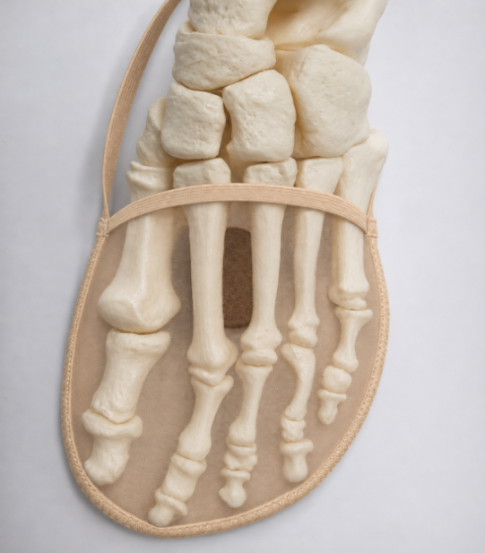

Supports the arch
Provides additional support for the transverse arch of the forefoot.
Long-awaited premiere
OB52P OB55P
Smart Pad technology in new SOLO models — built for professional workloads, with a cushioning pad and foot protection.

Video
In rhythmic gymnastics, the feet take serious daily loads. Relevés, turns, jumps and balances keep the forefoot working constantly, and a large share of body weight falls on it.
When these movements are repeated many times, load can concentrate on specific areas, causing fatigue, discomfort, pain and overuse injuries.
To make training more comfortable, SOLO developed Smart Pad — half-shoes with a built-in anatomical pad.


Inside Smart Pad is a special supportive insert — a metatarsal (anatomical) pad placed directly behind the heads of the metatarsal bones.
It performs three main functions:
Provides additional support for the transverse arch of the forefoot.
Helps spread pressure over a larger area so it does not focus on a few points.
Helps lessen local pressure around the metatarsal heads, especially the second and third.
In simple terms, the pad helps distribute load across the forefoot more evenly, without significantly limiting its mobility.
In preliminary observations, athletes reported a more comfortable base of support, a sense of stability in turns and balances, and a subjective feeling of lightness in relevé.
These observations are not yet proof of product effectiveness in clinical trials, but they indicate what advantages a gymnast may feel when using this design.
SOLO Smart Pad is made for additional forefoot support and more comfortable execution of familiar training elements.
Material for coaches and parents
Load, control and forefoot support — why this matters for training safety and how Smart Pad appeared.
Rhythmic gymnastics is a highly technical sport in which an athlete repeatedly performs jumps, turns, balances, leans, splits and work on half-pointe.
From the outside it looks like beautiful, fluid movement. For the musculoskeletal system it means hundreds of repeating cycles: loading, push-off, landing, stabilization.
One of the key links is the foot. It serves as a base of support and an active organ of movement at once: it pushes off, cushions, stabilizes and helps maintain balance.

If control of foot position or load distribution is disrupted, the load can travel up the kinematic chain — to the ankle, knee, pelvis and lower back. That does not mean every foot characteristic leads to injury, but it does require attention under high and regularly repeated load.

Rising onto half-pointe in choreography is often called relevé. The centre of pressure moves forward, work of the calf muscles and Achilles tendon increases, and support concentrates in the forefoot.
Relevé itself is not a dangerous movement. Risk rises when load exceeds the body’s capacity to recover.
In young athletes the body is still growing. Bones, tendons and muscles adapt at different rates, so the same training volume may be tolerated differently even at the same age.

Pronation is a natural foot movement that helps it adapt to the surface. The issue is not the movement itself, but excess or insufficient control.
If turnout is created mainly through the foot rather than controlled from the hip joint, the heel and arch can collapse inward. That changes the direction of load on the foot and ankle.
In jumps, landings, turns and balances the knee works as a link in the chain:
If the foot is not stable enough under load, and the heel or arch collapses inward excessively, this may be accompanied by tibial rotation and the knee drifting inward. The problem arises when the movement is repeated at high volume, poorly controlled, or performed against fatigue.
For a gymnast this matters especially during:

The metatarsal bones are especially loaded in push-off, jumps, turns and work on half-pointe. Overload most often affects the 2nd–3rd metatarsals.
A stress fracture is the result of accumulated microdamage when repeated load exceeds the bone’s capacity to recover.
Risk is linked not only to training volume. Recovery, nutrition, vitamin D and calcium status as medically indicated, menstrual function and energy availability also matter.
Coach
A coach does not make a diagnosis, but sees the athlete in motion and may be the first to notice changes.
Avoids rising onto one foot
Loses previous relevé height
Tucks the toes because of discomfort
Loses balance more often
Changes landing technique
Asks to reduce jumps
Reports burning, numbness or pinpoint pain
Pelvis collapses or the knee drifts inward
Parents
A child rarely says: “My metatarsal bone hurts.” Parents more often hear something else.
“It burns under my toes”
“Something is bothering me inside”
“I want to take them off as soon as possible”
“It hurts to step after training”
Such complaints should not be taken as “laziness” or “whining.” With recurring pain, swelling, a change in gait or a drop in relevé height, an in-person medical consultation is needed.

150+
athletes aged 6–16: complaints, orthopaedic status and wear zones on the inner surface of half-shoes formed the basis of a hypothesis about forefoot support
We assumed that supporting the forefoot could help redistribute pressure and reduce local overload around the 2nd–3rd metatarsals.
That is how half-shoes with a built-in metatarsal pad appeared. It sits behind the metatarsal heads and is designed to support the transverse arch of the forefoot.
The mechanism assumes a larger contact area and redistributed pressure without significantly limiting mobility. The effect depends on the pad’s shape, stiffness and position.


In preliminary observations, a more stable base of support may have helped control foot position better in relevé, turns and balances. The pad does not “correct” the limb directly — it redistributes load, which can also be seen in material wear.
Greater stability in turns and balances
A subjective feeling of lightness in relevé
More confident control of body position
Comfort when performing familiar elements

When individually selected by a specialist, a metatarsal pad can change how the foot contacts the surface and redistribute pressure in the forefoot.
A metatarsal pad is not a “magic button” and not a passive muscle trainer. With the right selection it can change contact and pressure distribution in the forefoot.
If an athlete subjectively feels a more confident base of support, that may help perform turns and balances more calmly. But the product does not replace work on technique, strength of the legs and pelvis, coordination and recovery.